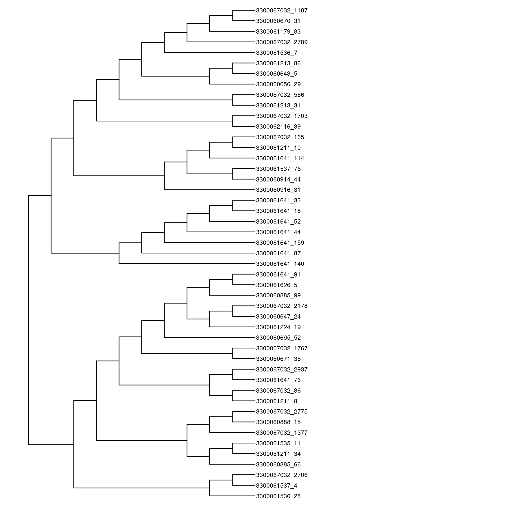
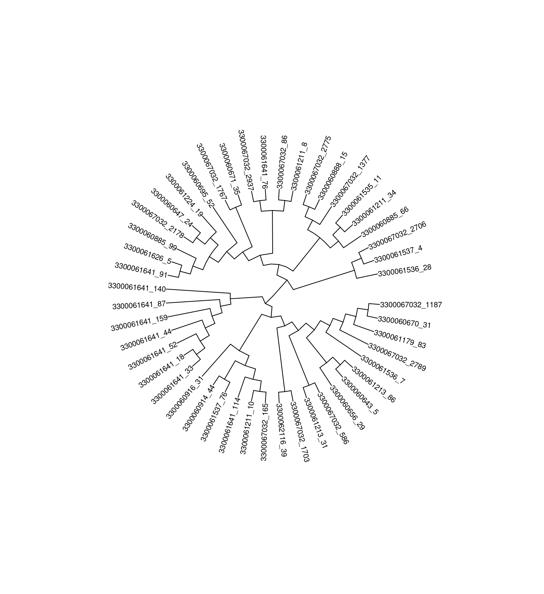

library(tidyverse)
library(knitr)
library(ggtree)
library(ggimage)
library(rphylopic)
library(treeio)
library(tidytree)
library(ape)
library(TreeTools)
library(phytools)Lab 15 : Update of GTDB and ggtree with your taxonomic group
Load libraries
Reading in files
Let’s load the MAG table with the new GTDB annotations with the updated taxonomy database
NEON_MAGs <- read_csv("data/NEON/GOLD_Study_ID_Gs0161344_NEON_2024_4_21.csv") %>%
# remove columns that are not needed for data analysis
select(-c(`GOLD Study ID`, `Bin Methods`, `Created By`, `Date Added`, `Bin Lineage`)) %>%
# create a new column with the Assembly Type
mutate("Assembly Type" = case_when(`Genome Name` == "NEON combined assembly" ~ `Genome Name`,
TRUE ~ "Individual")) %>%
mutate_at("Assembly Type", str_replace, "NEON combined assembly", "Combined") %>%
mutate_at("GTDB-Tk Taxonomy Lineage", str_replace, "d__", "") %>%
mutate_at("GTDB-Tk Taxonomy Lineage", str_replace, "p__", "") %>%
mutate_at("GTDB-Tk Taxonomy Lineage", str_replace, "c__", "") %>%
mutate_at("GTDB-Tk Taxonomy Lineage", str_replace, "o__", "") %>%
mutate_at("GTDB-Tk Taxonomy Lineage", str_replace, "f__", "") %>%
mutate_at("GTDB-Tk Taxonomy Lineage", str_replace, "g__", "") %>%
mutate_at("GTDB-Tk Taxonomy Lineage", str_replace, "s__", "") %>%
separate(`GTDB-Tk Taxonomy Lineage`, c("Domain", "Phylum", "Class", "Order", "Family", "Genus", "Species"), ";", remove = FALSE) %>%
mutate_at("Domain", na_if,"") %>%
mutate_at("Phylum", na_if,"") %>%
mutate_at("Class", na_if,"") %>%
mutate_at("Order", na_if,"") %>%
mutate_at("Family", na_if,"") %>%
mutate_at("Genus", na_if,"") %>%
mutate_at("Species", na_if,"") %>%
# Get rid of the the common string "Soil microbial communities from "
mutate_at("Genome Name", str_replace, "Terrestrial soil microbial communities from ", "") %>%
# Use the first `-` to split the column in two
separate(`Genome Name`, c("Site","Sample Name"), " - ") %>%
# Get rid of the the common string "S-comp-1"
mutate_at("Sample Name", str_replace, "-comp-1", "") %>%
# separate the Sample Name into Site ID and plot info
separate(`Sample Name`, c("Site ID","subplot.layer.date"), "_", remove = FALSE,) %>%
# separate the plot info into 3 columns
separate(`subplot.layer.date`, c("Subplot", "Layer", "Date"), "-") NEON metagenome information
We are going to remove the re-annotation and WREF plot samples from the data set you export last week from IMG.
NEON_metagenomes <- read_tsv("data/NEON/exported_img_data_Gs0161344_NEON.tsv") %>%
select(-c(`Domain`, `Sequencing Status`, `Sequencing Center`)) %>%
rename(`Genome Name` = `Genome Name / Sample Name`) %>%
filter(str_detect(`Genome Name`, 're-annotation', negate = T)) %>%
filter(str_detect(`Genome Name`, 'WREF plot', negate = T)) Now let’s reformat Genome Name as we did for the above MAG table
NEON_metagenomes <- NEON_metagenomes %>%
# Get rid of the the common string "Soil microbial communities from "
mutate_at("Genome Name", str_replace, "Terrestrial soil microbial communities from ", "") %>%
# Use the first `-` to split the column in two
separate(`Genome Name`, c("Site","Sample Name"), " - ") %>%
# Get rid of the the common string "-comp-1"
mutate_at("Sample Name", str_replace, "-comp-1", "") %>%
# separate the Sample Name into Site ID and plot info
separate(`Sample Name`, c("Site ID","subplot.layer.date"), "_", remove = FALSE,) %>%
# separate the plot info into 3 columns
separate(`subplot.layer.date`, c("Subplot", "Layer", "Date"), "-") Warning: Expected 2 pieces. Missing pieces filled with `NA` in 1 rows [53].NEON Chemistry data
NEON_chemistry <- read_tsv("data/NEON/neon_plot_soilChem1_metadata.tsv") %>%
# remove -COMP from genomicsSampleID
mutate_at("genomicsSampleID", str_replace, "-COMP", "") Join the NEON MAG, metagenome and chemistry dataframes into a single data fram
NEON_MAGs_metagenomes_chemistry <- NEON_MAGs %>%
left_join(NEON_metagenomes, by = "Sample Name") %>%
left_join(NEON_chemistry, by = c("Sample Name" = "genomicsSampleID"))Reading in the tree files
tree_arc <- read.tree("data/NEON/gtdbtk.ar53.decorated.tree")
tree_bac <- read.tree("data/NEON/gtdbtk.bac120.decorated.tree")Getting your subtree
You first need to find the internal node on the tree corresponding to your Domain, Phylum or Class. Below is an expample
# Make a vector with the internal node lables
node_vector_bac = c(tree_bac$tip.label,tree_bac$node.label)
# Search for your Phylum or Class
grep("Chloroflexota", node_vector_bac, value = TRUE)[1] "'0.996:p__Chloroflexota'"match(grep("Chloroflexota", node_vector_bac, value = TRUE), node_vector_bac)[1] 1712# First need to preorder tree before extracting. Not sure why
tree_bac_node_Chloroflexa <- Preorder(tree_bac)
tree_Chloroflexa <- Subtree(tree_bac_node_Chloroflexa, 1712)ggtree(tree_Chloroflexa) +
geom_tiplab(size=3) +
xlim(0,20)
ggtree(tree_Chloroflexa, layout="circular") +
geom_tiplab(aes(angle=angle))+
theme_tree() +
xlim(0,20)